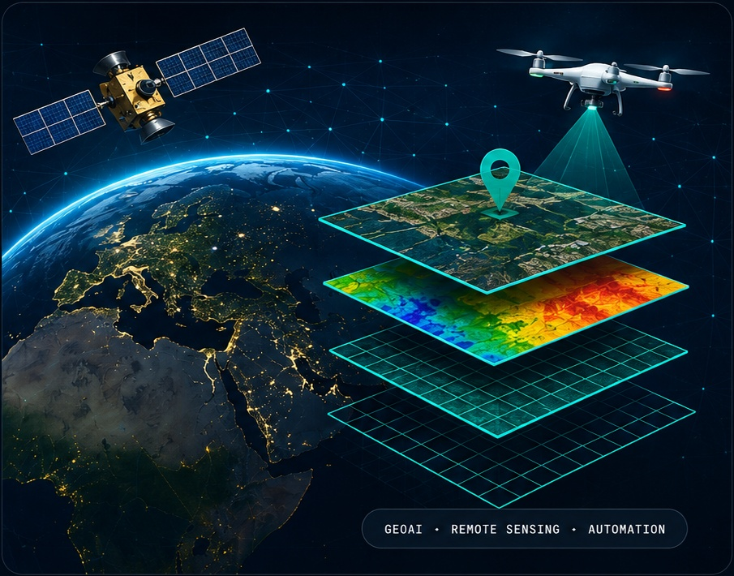

Experience
My journey in Geospatial Intelligence & AI.
Progression from GIS engineering and infrastructure mapping into technical leadership, remote sensing and applied GeoAI.

Career Journey
2012 – 2014
GIS Engineer
Spatial databases, georeferencing and hydraulic-modeling support.
2014 – 2016
GIS Engineer
Infrastructure GIS, imagery integration and project coordination.
2016 – 2020
Senior GIS Expert
GIS leadership for utility and water-supply delivery programs.
2020 – 2022
Project Manager
End-to-end technical delivery, planning and project documentation.
2022 – Present
Associate Principal GIS Analyst
International GIS, remote sensing, automation and GeoAI delivery.
Leadership Highlights
Technical LeadershipLead multidisciplinary geospatial delivery and methodology development.
QA / QCValidation, review and reproducible production workflows.
AutomationReduce repetitive processing through Python and workflow design.
Core Skills
GIS & Spatial Analysis
Remote Sensing
Machine Learning
Deep Learning
Python & Automation
Web/API Deployment
Data Visualization
Spatial Databases
Education
M.Tech · Applied AICompleted 2025
Advanced AI & Data ScienceOne-year diploma · 2023
Master · GIS & Remote SensingCompleted 2012
Master · GeographyPune University
At a Glance
13+Years Experience
30+Major Projects Delivered
2Publications
4+Awards & Recognition
Publications
- Automated tree counting from aerial imagery.
- Tree geolocation and health monitoring with YOLOv11 + satellite data.
Awards & Recognition
- Best performance & project management recognition.
- Remote sensing project recognition.
- Dashboard / digital delivery recognition.
Professional Contribution
- Technical mentoring and analyst support.
- Knowledge sharing and guest lectures.
- Applied AI integration within geospatial workflows.